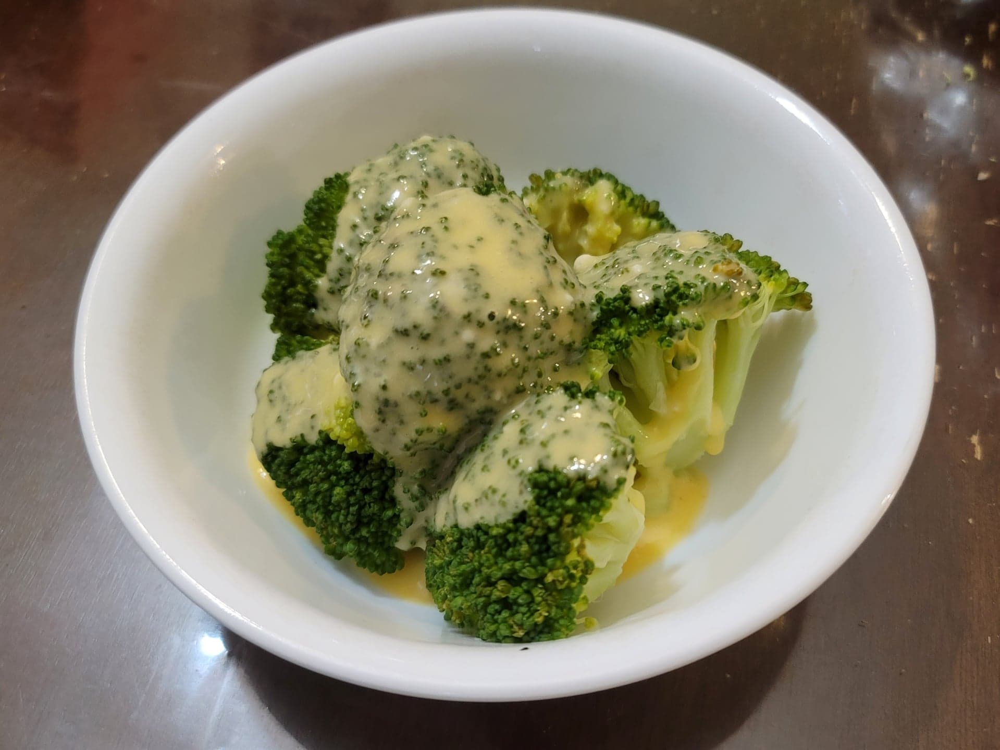

Broccoli and Cheese

Ingredients:
Broccoli:
- 4 cups Broccoli
- 1 cup Water
Cheese:
- 1 cup Milk
- 1 tbsp Cornstarch
- 1 cup Cheddar cheese, shredded
- 1 tbsp Parmesan, grated
- Salt, to taste
- Black pepper, to taste
Instructions:
- Place the broccoli and water into a large pan. Bring to a simmer over medium heat. Once simmering, cover and steam for 3-5 minutes or to preference. Then drain the water and transfer to serving dish.
- Whisk together the milk and cornstarch. Then transfer to a saucepan over medium heat and whisk until thickened.
- Reduce the heat to low and whisk in the cheeses. Once completely melted, season with salt and pepper to taste. Pour the cheese sauce over the broccoli and serve.